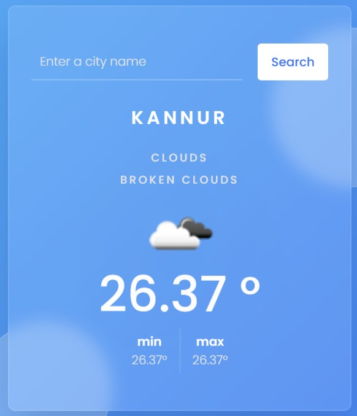
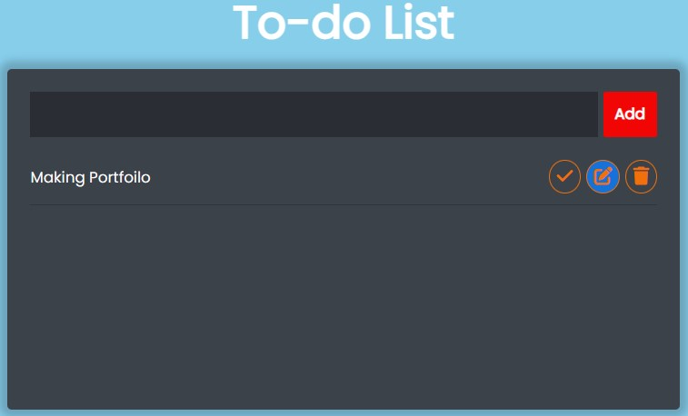
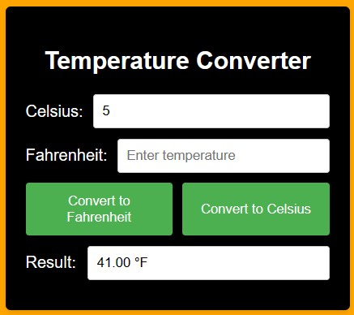
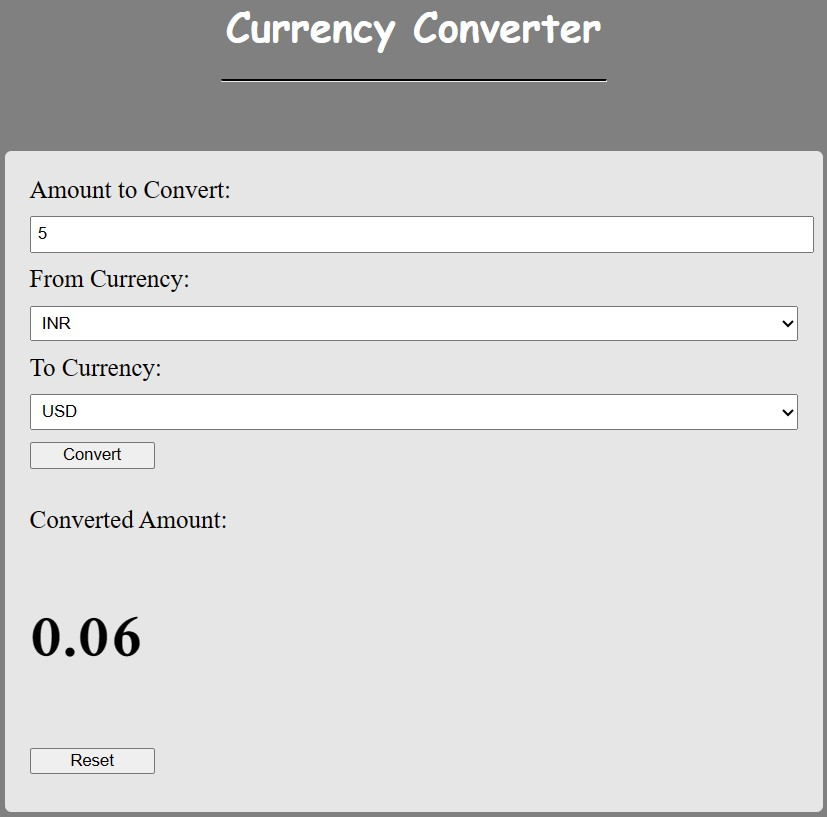
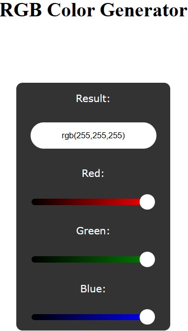

This page showcases my projects developed using HTML, CSS, and JavaScript in Visual Studio Code.

The Weather Forecast Website, developed using HTML, CSS, and JavaScript in Visual Studio Code, is a
beautifully designed and interactive platform that provides users with up-to-date weather
information.
With its sleek and modern interface, this website offers a seamless and intuitive user experience.
Users can easily navigate through the website to access weather details for their desired locations.
Random Joke Generator Website

The Random Joke Generator Website, developed using HTML, CSS, and JavaScript in Visual Studio Code,
is a fun and entertaining platform that brings laughter and amusement to its users.
With a clean and user-friendly interface, this website offers a seamless and enjoyable experience.
Users can click a button to generate random jokes and have a good laugh.

With its clean and minimalist design, the To-do List Website allows users to easily create, track,
and organize their tasks in a centralized location.
The website offers a straightforward interface where users can enter task descriptions, set due
dates, and assign priority levels to each task.
Users can mark tasks as complete, edit task details, or delete tasks as needed.
Temperature Converter Website

The Temperature Converter Website, developed using HTML, CSS, and JavaScript in Visual Studio Code,
is a user-friendly and efficient platform designed to convert temperature values between different
units.
Whether you're traveling or simply curious about temperature conversions, this website offers a
seamless and convenient solution.
With its intuitive interface, the Temperature Converter Website allows users to easily input a
temperature value and select the desired unit of measurement, such as Celsius or Fahrenheit.
Currency Converter Website

The Currency Converter Website, developed using HTML, CSS, and JavaScript in Visual Studio Code, is
a versatile and user-friendly platform designed to facilitate currency conversion for users around
the world.
With its intuitive interface and functionality, this website offers a seamless and efficient
currency conversion experience.
The website provides a wide range of currency options, allowing users to easily convert between
different currencies.
Hex Color Generator Website

The Hex Color Generator Website, created using HTML, CSS, and JavaScript in Visual Studio Code, is a
vibrant and interactive platform that allows users to explore and generate various hex color codes.
The website provides a simple yet powerful tool for generating random hex color codes. Users can
move the cursor to generate a new color, and the corresponding hex code is displayed on the screen.
This feature is particularly useful for designers, developers, and anyone in need of color
inspiration for their projects.